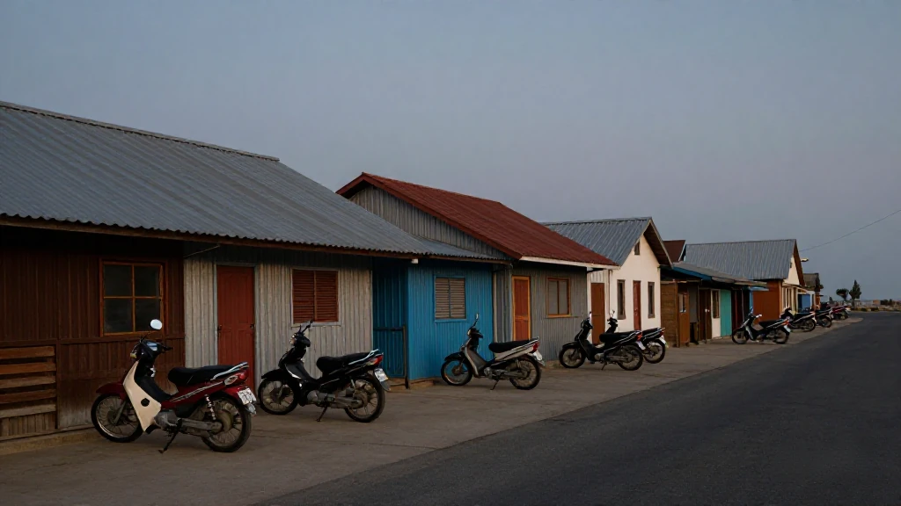
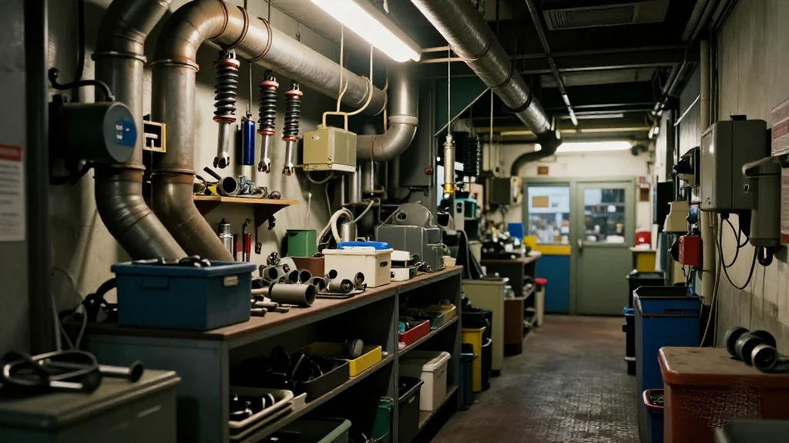
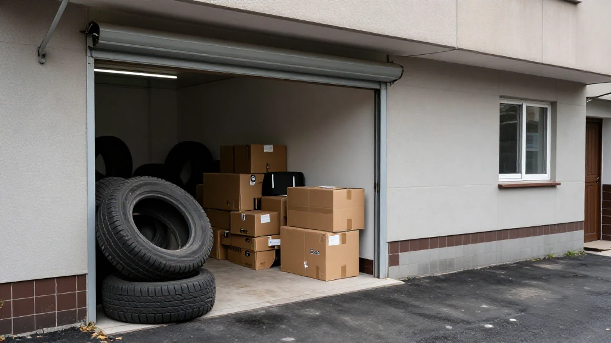
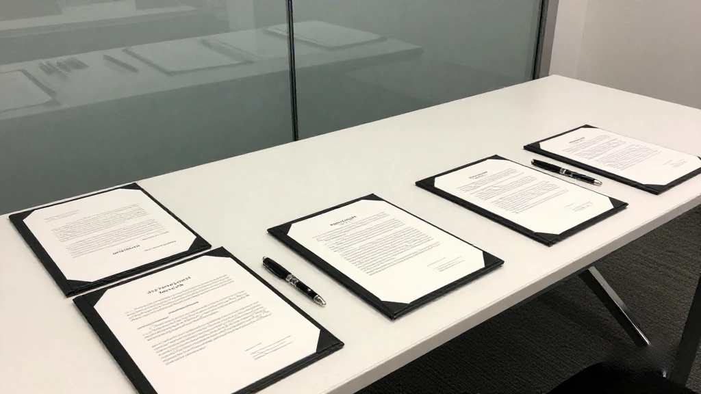
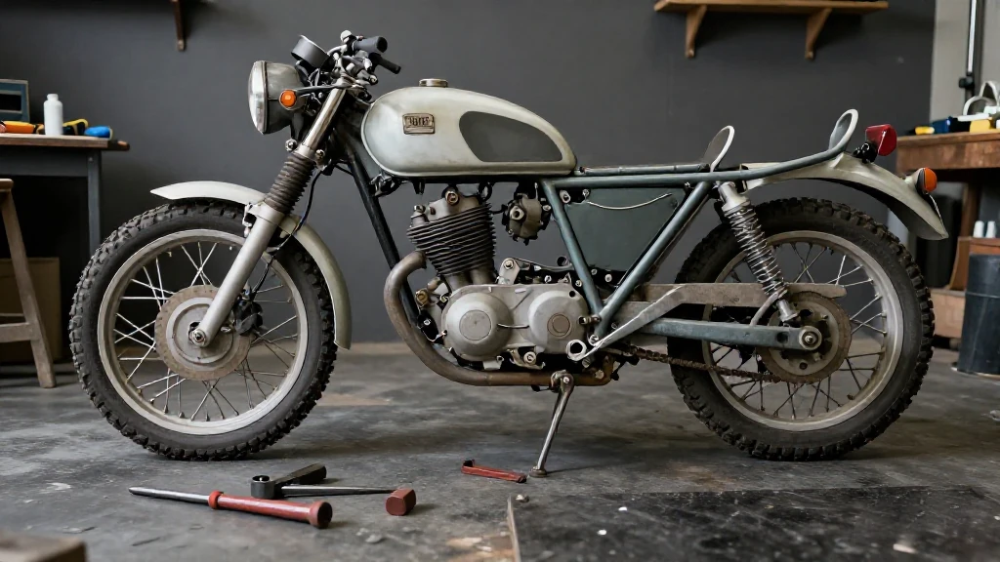
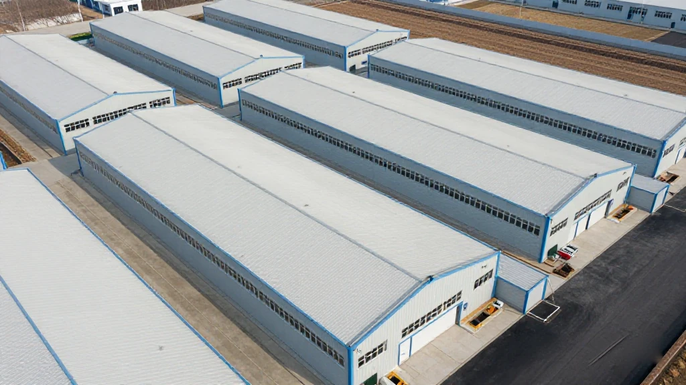

圖片由 AI輔助創作Image by AI
【鄭哥點評】欄目：鄭哥博客點評｜日期：2026-11-08
碣石係陸豐一個沿海鎮，離汕尾市區四十幾公里。呢個地方有句講法傳咗好多年：喺碣石撿到一粒螺絲，當地師傅可以幫你變出一台摩托車。我做外貿二十六年，呢個名聽過太多次——不過多數人講嘅係「水車」，唔係「產業」。今日我想講嘅，係後面嗰半段。

圖片由 AI輔助創作Image by AI
一、「一粒螺絲」唔係誇張，係一條供應鏈
台灣《ETtoday》2021 年做過一篇碣石實錄，寫得好直白：呢個鎮係「全大陸水貨摩托車的集散地」，日本本田、鈴木等品牌嘅拼裝翻新車由呢度流向全國。配件店入面，「排氣、儀表盤、油箱、車燈、避震」，由地板掛到天花板。有配件倉庫老闆聽到遊客話似廢品站，唔高興，回一句：「我這個廢品站值八百多萬。」
為什麼偏偏係碣石？報道講得清楚：沿海小鎮，早年船運能靠岸，走私車由此進來；當地師傅拿到零件，重新拋光、清洗、噴漆，再組返一台完整嘅車。港口、手藝、價錢——三樣嘢疊埋一齊，先至有呢條鏈。缺一樣都唔成事。
我補一句：所謂「一粒螺絲變一台車」，本質係一條極度成熟嘅逆向供應鏈——拆解、分類、修復、配對、組裝，每一環都有專人。手藝係真嘅，唔係神話。
來源：ETtoday新聞雲《全大陸水貨機車集散地「碣石」 在地人笑：1顆螺絲都能變一輛新車》（邱茀濱），2021-03｜https://speed.ettoday.net/news/1913900

圖片由 AI輔助創作Image by AI
二、灰色以外，仲有「有市場、缺規範」
南方+ 記者陳欣欣 2026 年 9 月去咗碣石，寫嘅係另一面：家庭作坊見縫插針，消防通道被貨物堵死；環保設施缺位，油污廢水直排；商戶各自為戰，低價競爭此起彼伏。
佢引咗一句當地總結，我覺得好準：「有市場、缺規範，有活力、缺後勁。」
呢句唔止適用於碣石。任何靠灰色起家嘅產業，都會走到呢一步：市場已經養大，規矩仲未建立。你唔可以簡單講一句「取締」——幾千人靠呢個食飯；亦唔可以繼續裝冇事——消防同排污係實數，唔係口水。
來源：南方+《老行當裡蹚出共富新路！陸豐碣石鎮摩托車配件產業「入園上樓」》（陳欣欣），2026-09-07｜https://static.nfnews.com/content/202609/07/c12793732.html

圖片由 AI輔助創作Image by AI
三、2026 年，兩個動作
第一個動作喺 6 月 23 日：陸豐市政府同華夏集團國際有限公司簽約「碣石國際摩托車配件產業園」，總投資約 10 億元，規劃用地 10 萬平方米，整合研發製造、檢驗檢測、電商展銷、倉儲物流、品牌孵化。陸豐市政府門戶嘅措辭係：推動「傳統摩托車配件產業」向現代化集群轉型升級。
第二個動作喺 9 月：園區選址內南碣公路旁，採取「產業入園 + 就地提升」分類施策——規模企業引導入園，小作坊靠整治規範就地提升。當時園區已簽框架協議、正進行拆除同土地平整，近 200 家商鋪表達入駐意向；摩托車配件行業協會亦在籌備，將來負責制定行業標準、規範經營秩序。
注意「近 200 家」呢個數——係「表達意向」，唔係「已簽約」。呢個分別好大，我下面會講。
來源：陸豐市人民政府門戶網站《陸豐市碣石國際摩托車配件產業園項目成功簽約》（來源：汕尾日報），2026-06-24｜https://www.lufengshi.gov.cn/swlufeng/ymys/sylbt/content/post_1256608.html

圖片由 AI輔助創作Image by AI
四、由「收舊賣舊」轉向「製造配套」
南方+ 寫咗方向：引導經營主體由二手配件翻新，轉向標準化零部件生產、改裝配件研發；園區建成後圍繞車架、輪轂、五金零部件、模具加工精準招商，把「外地採購」變成「本地配套」。線上就試抖音直播、阿里巴巴國際站，鎮裡打算培育電商主體，做區域性線上集散地；園內會配產品檢驗檢測中心。
呢啲字眼看落好正——但每一句都係一道門檻。做標準化零部件，要設備、要圖紙、要認證；上直播同國際站，要發票、要品牌、要售後。以前收舊賣舊，呢三樣都唔使。
所以呢次唔係「搬屋」，係「轉行」。搬屋搬完就完；轉行要重新學一次點做生意。
來源：南方+《老行當裡蹚出共富新路！陸豐碣石鎮摩托車配件產業「入園上樓」》（陳欣欣），2026-09-07｜https://static.nfnews.com/content/202609/07/c12793732.html

圖片由 AI輔助創作Image by AI
五、鄭哥點評
第一，碣石真正嘅資產唔係「水車」，係那批師傅嘅手。手藝係硬資產，呢點我唔懷疑——一條逆向供應鏈做到全國認，唔係靠運氣。
第二，但手藝搬入園區，要過三關：交租、過檢測、開發票。呢三件事，過去三十年都唔使做。過唔到，園區只會變成一個更貴嘅鐵皮棚；過得到，呢個鎮就有機會由「全國最平嘅水貨市場」，變成「粵東最齊嘅配件供應地」。
第三，我睇「近 200 家有意向」呢個數，唔悲觀亦唔樂觀——意向係最便宜嘅承諾。真正嘅分水嶺唔係簽約日，係第一批入園企業三年之後仲交唔交得起租。
最後一句：灰色嘅錢來得快，但留唔住人；手藝留得住人。呢個鎮而家做嘅事，就係睇下佢可唔可以由前者，轉去後者。
圖片由 AI輔助創作Image by AI
\[Zheng Ge's Take\] Column: Zheng Ge's blog commentary | Date: 2026-11-08
Jieshi is a small coastal town in Lufeng, some forty kilometres from Shanwei city. A saying has circulated there for years: pick up a single screw in Jieshi and a local mechanic will turn it back into a motorcycle. I have spent twenty-six years in foreign trade and I have heard the name many times - but mostly in the same breath as grey-market bikes, not as an industry. What I want to write about today is the second half of that story.
圖片由 AI輔助創作Image by AI
1. 'One screw' is not an exaggeration - it is a supply chain
In 2021 Taiwan's ETtoday published a straight-talking report from Jieshi: the town is the mainland's clearing house for grey-market motorcycles, where rebuilt Hondas, Suzukis and other Japanese brands fan out across the country. Inside the parts shops, 'exhausts, instrument clusters, fuel tanks, headlights, shock absorbers' hang from floor to ceiling. One warehouse owner took offence when a visitor called his place a scrap yard: 'This scrap yard of mine is worth more than eight million.'
Why Jieshi? The report is plain about it: a coastal town where boats could once tie up, so the grey bikes came in by water; local mechanics took the parts, repolished, washed and repainted them, then rebuilt a complete machine. Port, skill and price - three things stacked together. Take one away and the chain does not work.
One addition of my own: 'one screw into a motorcycle' is really a very mature reverse supply chain - strip, sort, repair, match, assemble, with a specialist at every step. The craft is real. It is not folklore.
Source: ETtoday新聞雲《全大陸水貨機車集散地「碣石」 在地人笑：1顆螺絲都能變一輛新車》（邱茀濱），2021-03 | https://speed.ettoday.net/news/1913900
圖片由 AI輔助創作Image by AI
2. Beyond the grey: plenty of market, no standards
In September 2026 a Southern Plus reporter, Chen Xinxin, went to Jieshi and wrote the other side: family workshops squeezed into every gap, fire lanes blocked by goods, no environmental facilities so oily wastewater went straight out, and merchants fighting each other on price.
She quoted a local summary that I think is exact: 'Market, yes; standards, no. Vitality, yes; staying power, no.'
That sentence is not only about Jieshi. Every industry that starts in the grey reaches this point: the market has grown up, the rules have not. You cannot simply say 'shut it down' - thousands of people eat from it. Nor can you pretend nothing is wrong - fire safety and wastewater are real numbers, not talk.
Source: 南方+《老行當裡蹚出共富新路！陸豐碣石鎮摩托車配件產業「入園上樓」》（陳欣欣），2026-09-07 | https://static.nfnews.com/content/202609/07/c12793732.html
圖片由 AI輔助創作Image by AI
3. Two moves in 2026
The first move came on 23 June: the Lufeng municipal government signed with Huaxia Group International for a 'Jieshi International Motorcycle Parts Industrial Park' - roughly one billion yuan of investment, a hundred thousand square metres of planned land, combining R&D and manufacturing, testing and inspection, e-commerce showrooms, warehousing and logistics, and brand incubation. The government portal's own wording is that it will drive the 'traditional motorcycle parts industry' toward a modernised cluster.
The second move came in September: the park sits beside the Neinan-Jieshi highway and applies a two-track policy - 'into the park, or improve in place'. Larger firms are guided in; small workshops are to be regularised where they stand. At that point framework agreements were signed, demolition and land levelling were under way, and nearly two hundred shops had expressed interest in moving in. A motorcycle parts trade association was being set up to write standards and police conduct.
Note the phrase: nearly two hundred expressed interest, not nearly two hundred signed. That difference matters, and I will come back to it.
Source: 陸豐市人民政府門戶網站《陸豐市碣石國際摩托車配件產業園項目成功簽約》（來源：汕尾日報），2026-06-24 | https://www.lufengshi.gov.cn/swlufeng/ymys/sylbt/content/post_1256608.html
圖片由 AI輔助創作Image by AI
4. From trading old parts to supplying new ones
Southern Plus laid out the direction: push operators away from refurbishing used parts and toward standardised component production and aftermarket parts development; once the park is up, target frame, wheel hub, hardware and tooling segments specifically, so that 'bought in from elsewhere' becomes 'supplied locally'. Online, merchants are testing Douyin livestreams and Alibaba International; the town plans to cultivate e-commerce operators and build a regional online distribution base, with a product testing centre inside the park.
It all reads well - but every sentence is a threshold. Standardised components need machines, drawings and certification. Livestreaming and international listings need invoices, a brand and after-sales service. Trading old parts required none of the three.
So this is not a move. It is a change of trade. A move ends when the boxes are unpacked; a change of trade means learning the business again.
Source: 南方+《老行當裡蹚出共富新路！陸豐碣石鎮摩托車配件產業「入園上樓」》（陳欣欣），2026-09-07 | https://static.nfnews.com/content/202609/07/c12793732.html
圖片由 AI輔助創作Image by AI
5. Zheng Ge's Take
First: Jieshi's real asset was never the grey bikes, it is the hands of those mechanics. Craft is a hard asset and I do not doubt it - a reverse supply chain recognised nationwide does not happen by luck.
Second: but craftsmanship inside a park has to pass three gates - rent, inspection and invoicing. None of the three was required for thirty years. Fail them and the park is just a more expensive tin shed. Pass them and the town has a chance to go from the country's cheapest grey market to eastern Guangdong's most complete parts supplier.
Third: I read 'nearly two hundred interested' as neither good nor bad news - interest is the cheapest promise there is. The real divide is not signing day. It is whether the first cohort can still pay rent three years later.
One last line: grey money arrives fast but keeps nobody; craft keeps people. What this town is doing now is finding out whether it can move from the first to the second.